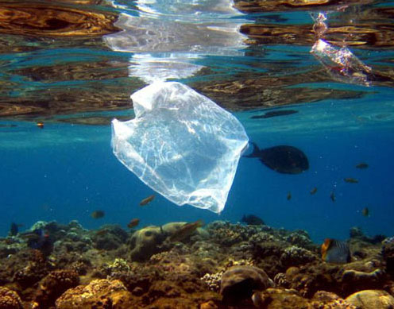

The main threats
Many of the 327 species of living chelonians that are now known to exist are endangered. Currently existing sea turtles come in seven different species. Six of them are threatened or endangered due to human behavior or way of life. The following are a few of the greatest dangers to turtles: Entanglement in fishing gear: The biggest threat to sea turtles and a lot of other marine animals today is accidental capture in fishing nets and lines. About 40% of the captured animals are thrown away as trash. Tens of miles long longlines with thousands of baited hooks can catch countless unintentional victims. Despite legislation protecting sea turtles in many countries, illegal poaching is still a major issue. This includes the trafficking in their eggs, meat, and shells. The skin and shell are used to produce jewelry, eyewear, and other items, while the flesh and eggs are consumed. Coastal development: A lot of the coastlines that sea turtles utilize to nest are being built up. This has led to habitat loss or pollution of the beaches where birds lay their eggs. Numerous marine animals perish each year as a result of ingestion or entanglement in plastic or other marine waste. global Warming
- Harvest for consumption
- Marine Debris – Ingestion & Entanglement 
- Illegal Sea Turtle Shell Trade

Although sea turtles are revered in many cultures around the world for their mythological or spiritual significance, this hasn't stopped people from eating their eggs or meat. Sea turtles have served as a source of food for many coastal cultures, particularly in Central America and Asia. Turtle hunters search the beaches at night during the nesting season in search of nesting females. They frequently wait until after the female has laid her eggs before killing her. They then take the meat and the eggs. People may also use the oil, cartilage, skin, and shell of the turtle as well as other components of the animal to make items.
Each year, plastic trash in the ocean kills over 1 million marine species, including mammals, fish, sharks, turtles, and birds. The source of more than 80% of this plastic is land. It drains from our streets and beaches. It enters streams and rivers through storm drains. It flies into our oceans from landfills. Numerous sea turtles unintentionally ingest these plastics after mistaking them for food as a result. Particularly leatherbacks are unable to distinguish between floating trash bags and floating jellyfish, which are both important parts of their diet. Plastic bags, balloons, bottles, deteriorating buoys, plastic packaging, and food wrappers make up the majority of the debris. others plastics are difficult to perceive; others are so small that they are invisible to the unaided eye. These particles can cause sea turtles to grow ill or possibly starve if they consume them. Turtles

Since ancient times, hawksbill sea turtles have been hunted for their exquisite gold and brown shells, which are used to make jewelry and other high-end goods. These turtles are now classified as critically endangered as a result. Hawksbill populations are thought to have decreased by 90% during the past 100 years, according to scientists. Although illegal trading is the main reason for this reduction, there is still a need for shells on the black market today.